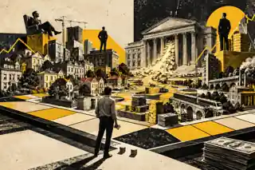

ECONOMÍA · 8 MIN
TE INVITAN A JUGAR CUANDO CASI TODO TIENE DUEÑO
Te dan una ficha y las mismas reglas. Solo hay un pequeño problema: la partida empezó antes de que llegaras.
ENTENDERLO
Oro, fiat, bancos, stablecoins e inflación en un solo mapa.
→02Entiende tipos, crédito y vivienda.
→03Empieza por déficit, deuda y bonos.
→04Empieza por bonos: promesas, riesgo, tiempo y precio.
→Gran parte del dinero que usas no sale de una imprenta. Aparece cuando un banco concede crédito.
ENTENDERLO →No necesitas saber economía.
Solo necesitas hacer buenas preguntas.
Aquí empezamos por ellas.
1971
Nixon salió en televisión un domingo. Dijo que la medida era temporal.
Tenemos malas noticias. ↘︎
ENTENDER QUÉ PASÓ →RABBIT HOLE
Simple no significa superficial. Puedes entender la web sin entrar aquí. Pero ya que estás…
EMPIEZA DESDE CERO
Hay una ruta para empezar por inflación, dinero y tipos y acabar con un mapa: bancos, deuda, mercados, poder, historia monetaria y las preguntas que quieras abrir después.
EMPIEZA AQUÍ →